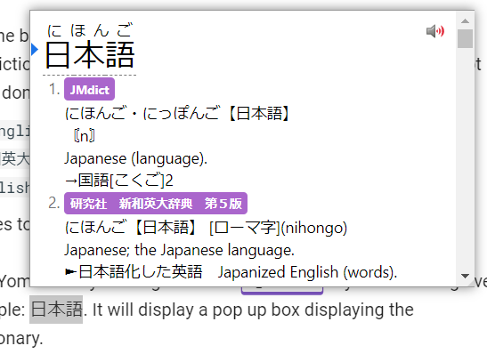
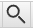

Hướng dẫn cài đặt Yomitan¶
Cập nhật chút: Yomichan không còn được hỗ trợ. Yomitan là bản phát triển kế tiếp của Yomichan.
Yomitan là gì?¶
Yomitan là một extension (tiện ích mở rộng) trên trình duyệt (Chrome, Chromium-based hoặc Firefox) cho phép bạn tra cứu các từ Tiếng Nhật cả nghĩa lẫn cách đọc trên trang web một cách dễ dàng.
Bắt đầu¶
Yomitan có thể tải ở trên cả Chromium và Firefox.
Tải tại đây:
- Chrome Web Store - Cho các trình duyệt như Chrome, Chromium, Brave, Edge hoặc bất kì trình duyệt nào dựa trên nhân Chromium
- Firefox - Cho Firefox hay các trình duyệt dựa trên Firefox như Librewolf hoặc Waterfox.
Sau khi cài xong nó sẽ mở một tab mới, bạn đóng trang đó lại và tìm Yomitan trong phần "Tiện ích mở rộng" trong trình duyệt (Hoặc Addons cho Firefox).
Tải từ điển¶
Khi bạn mới cài Yomitan lần đầu, bạn sẽ cần cài từ điển để có thể sử dụng nó.
Những tệp này sử dụng phần mở rộng .zip (file extension) và bạn không được giải nén nó ra.
Từ điển Nhật - Anh¶
Gợi ý từ người dịch: Bạn nên tải cả bộ Nhật - Anh ở dưới để bao quát lượng từ hơn và có thêm nhiều cái hay nữa.
Bạn có thể tải bộ từ điển từ tác giả gốc của bài viết này: Bộ sưu tập từ điển Yomitan của Shoui
Tải từ điển trong các thư mục tương ứng (Bilingual - Từ điển song ngữ Nhật - Anh, Kanji, Grammar .etc.)
Bạn nên cài đặt các từ điển sau (theo shoui):
Bilingual/[Bilingual] Jitendex (Recommended).zipBilingual/[Bilingual] 新和英.zipKanji/[Kanji] KANJIDIC (English).zipGrammar/Dictionary of Japanese Grammar.zipPitch Accent/アクセント辞典v2 (Recommended).zip
Cài đặt từ điển và sử dụng cơ bản¶
- Bấm vào icon trên thanh công cụ của trình duyệt.
- Bấm vào icon để mở cài đặt.
- Chọn "Dictionaries" ở thanh sidebar bên trái rồi chọn "Configure installed and enabled dictionaries…"
- Bấm vào nút "Import" ở bên dưới.
-
Here's where you select the dictionaries to import. Please only import the following.
Bilingual/[Bilingual] Jitendex (Recommended).zipBilingual/[Bilingual] 新和英.zipKanji/[Kanji] KANJIDIC (English).zipGrammar/Dictionary of Japanese Grammar.zipPitch Accent/アクセント辞典v2 (Recommended).zip
-
Đợi các từ điển được thêm vào. Sẽ mất một lúc (Mình làm trên Firefox thấy lâu hơn so với bên Chromium)
- Sau khi hoàn tất, bạn có thể kiểm tra Yomitan bằng cách giữ phím Shift và di chuột qua văn bản Tiếng Nhật. Thử di chuột vào cái này xem: 日本語. Nó sẽ hiện một pop-up box hiển thị các định nghĩa được chia theo từ điển.

Bấm ra chỗ khác trên màn hình hoặc phím Esc để ẩn hộp thoại của Yomitan đi
Nếu bạn cần đọc Kanji riêng cho từng từ thì bấm vào Kanji đó (Phải tải KANJIDIC hoặc KanjiDictVN)
Bạn có thể bấm vào nút  để nghe phát âm từ.
để nghe phát âm từ.
Trên thanh công cụ trình duyệt, nếu bạn chọn biểu tượng Yomitan, sau đó chọn biểu tượng

hoặc dùng tổ hợp phím tắtAlt+ Insert, bạn có thể truy cập vào "Yomitan Search" - bạn có thể sử dụng Yomitan như một từ điển Tiếng Nhật riêng (Hoàn toàn Offline).
Có thể chỉnh kích cỡ Pop-up trong cài đặt và cả giao diện tối nữa.
Jitendex là từ điển Nhật-Anh, được xây dựng dựa trên JMDict và lấy ví dụ câu từ dự án Tatoeba.
新和英 (Shinwaei) Từ điển Nhật-Anh được làm cho người Nhật, có nhiều câu ví dụ
KANJIDIC Từ điển Kanji.
Dictionary of Japanese Grammar, or 日本語文法辞典(全集) - từ điển ngữ pháp
アクセント辞典v2 Tra thông tin Pitch Accent
Từ điển đo độ phổ biến của từ¶
Yomitan hỗ trợ từ điển tần suất để cho bạn biết độ phổ biến của từ này
JPDB - Danh sách làm bởi JPDB, tổng hợp từ light novels, visual novels, Anime and j-drama.
CC100 - Danh sách tần suất các từ xuất hiện trên Internet của Nhật, các từ trang . Ví dụ: 審議会 (council) có độ phổ biến 9733 trong CC100 và 58730 trong JPDB.
Thế nào là từ phổ biến?
Rất phổ biến: 1-10,000
Phổ biến: 10,001-20,000
Tương đối phổ biến: 20,001-30,000
Chắc là phổ biến: 30,001-40,000
Không phổ biến: 40,001-50,000
Hàng hiếm: 50,001-80,000
Người-bản-ngữ-chắc-cũng-không-biết: 80,000+
Cài đặt Anki¶
Đọc trên trang của kuri.
Server audio ngoại tuyến (Nhiều audio hơn mặc định)¶
Nhắc nhỏ
Phần còn lại của bài viết sẽ không được dịch nên bạn cần đọc ở trang gốc bằng Tiếng Anh